Oddíl silového trojboje TJ Lokomotiva Krnov – jeden z nejstarších a nejúspěšnějších oddílů v ČR s více než 50 lety tradice, mistrovskými tituly i evropskými rekordy.
Silový trojboj je sport zaměřený na maximální rozvoj síly ve třech disciplínách. Kliknutím na kartu zobrazíte kompletní pravidla a technické požadavky.
Závodník provede hluboký dřep s činkou na ramenou. Stehna musí klesnout níže než kolena. Rozvíjí svaly nohou a zad.
Závodník leží na lavici a tlačí činku od hrudi do plného vyproštění paží. Max. šíře úchopu mezi ukazováčky je 81 cm.
Závodník zvedne činku ze země do stoje vzpřímeného s rameny za osou. Siluje záda, trapézy a nohy. Závěrečná disciplína každého závodu.
Dne 1. února 1973 se parta šesti lidí rozhodla založit pod TJ Lokomotiva Krnov oddíl silového trojboje – jeden z nejstarších a nejúspěšnějších oddílů silového trojboje v České republice.
Historicky první soutěž oddílu se konala 29. září 1973, kde závodníci ihned vybojovali medailová místa. Oddíl záhy přilákal výborné závodníky, kteří se prosazovali na domácí i mezinárodní scéně a řadili organizaci k elitě celého tehdejšího Československa.
Za více než půl století existence vychoval klub závodníky s 14+ tituly MČR a ME, Mistrem Evropy, několika národními rekordy a stovkami umístění na stupních vítězů. Dnes oddíl působí ve všech věkových kategoriích – mládež, junioři, muži, veteráni i družstva. Z původní šestice zakladatelů se klubového dění aktivně dožil a podílel na jeho rozvoji Václav Stuchlík, který vede oddíl dodnes.
Přehled výsledků z posledních soutěží na regionální, národní i mezinárodní úrovni.
Oddíl vychoval závodníky, kteří se prosadili na domácí i mezinárodní scéně.
Tomáš Juříček – titul Mistra Evropy v RAW silovém trojboji mužů a dva evropské rekordy v mrtvém tahu a v součtu.
Tomáš Juříček – pět titulů Mistra ČR (RAW 2017, EQ 2018, RAW 2018, RAW 2019, EQ 2020). Český rekord v dřepu 225 kg. Nejúspěšnější závodník klubu.
Jakub Lukeš (nar. 2000) – titul Mistra ČR juniorů RAW v roce 2022 (Dolní Břežany, součet 707,5 kg) a 2023 (Plzeň, součet 705 kg). Navíc 4× vítěz MMS/MMJ a 2. místo MČR 2019.
Štěpán Ticháček (nar. 2005) – 1. místo 33. MČR juniorů EQ 2025, do 74 kg, součet 535 kg. Zároveň 3. místo na MČR Open. V roce 2023 Mistr severní Moravy ML juniorů RAW.
Štěpán Matouš Jedelský (nar. 2006) – 1. místo MČR RAW mrtvý tah 2024, výkon 235 kg. Mistr severní Moravy 2024 (součet 530 kg). Osobní maximum 2026: součet 600 kg.
Alexandr Novotný (nar. 2006) – 1. místo MMS 2024 (405 kg) a 3. místo MČR 2024 Benešov (součet 450 kg). V roce 2026 stříbrná medaile na MMS, junioři -66 kg (432,5 kg).
Eliška Hamrlová (nar. 1999) – 1. místo na 6. Mistrovství Moravy juniorek v klasickém trojboji 2022 v Blansku, součet 222,5 kg.
Filip Hasmanda (nar. 1996) – 1. místo 23. MMD EQ 2018 v Krnově (495 kg), 2. místo 2019 (515 kg) a 3. místo MČM 2020 (470 kg).
Od roku 1973 vychovává oddíl závodníky ve všech věkových skupinách. 40+ aktivních závodníků, každoroční Vánoční cena Krnova v bench pressu od roku 2005.
TJ Lokomotiva Krnov patří k nejúspěšnějším oddílům v krajských i celostátních soutěžích družstev. Přehled nejlepších kolektivních výsledků.
Záběry ze závodů, mistrovství a akcí pořádaných oddílem TJ Lokomotiva Krnov. Kliknutím obrázek zvětšíte.
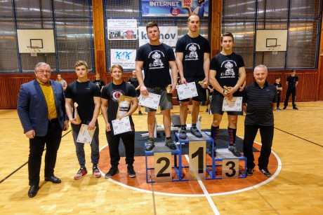
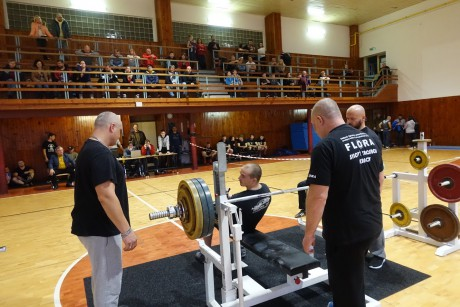
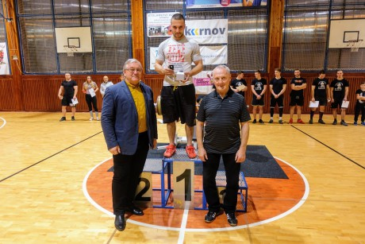
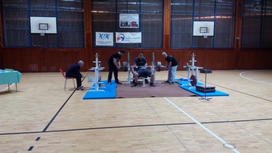
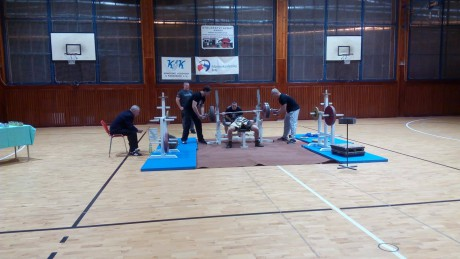
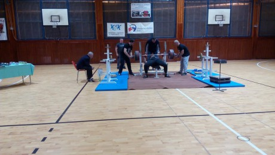
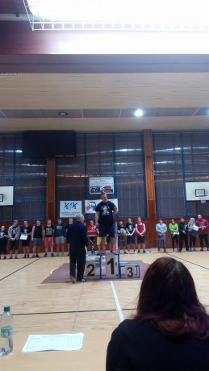
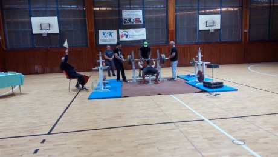
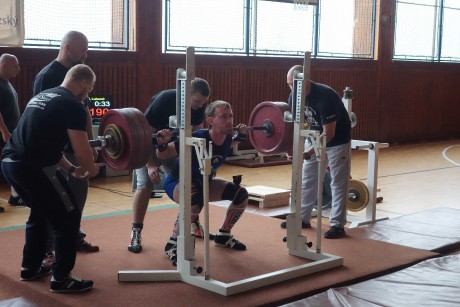
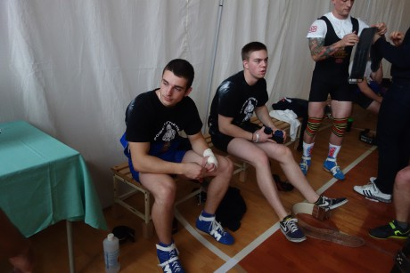
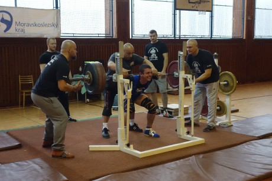
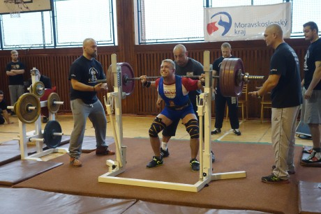
Máte zájem o silový trojboj nebo chcete vědět více? Neváhejte nás kontaktovat.